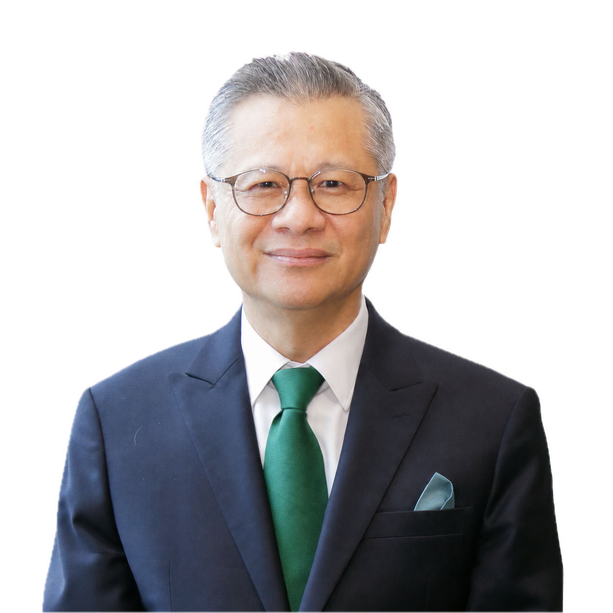
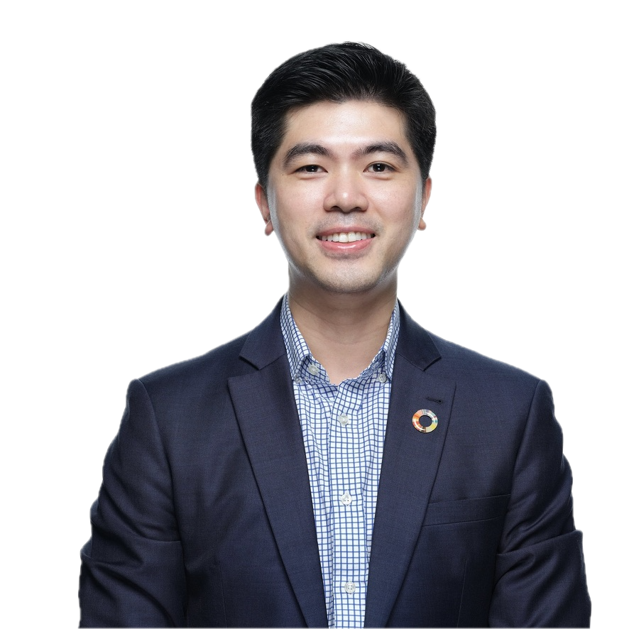

Duli Yang Teramat Mulia Tengku Amir Shah ibni Sultan Sharafuddin Idris Shah
Royal Patron of AiSED
Organisational Chart
Steering and organising leadership for AiSED International Conference 2026.
Royal Patron of AiSED

Founder & Chairman, AiSED

Executive Co-Chair, AiSED

Founder President, AeU

Vice Chancellor, AeU

President & Founder, Gaine Academy
Director, Gaine Academy
Executive Co-Chair, AiSED

Board Secretary, AiSED

Head, AeU-SPEED
CEO, Gaine Academy

Head of Business Development, Gaine Academy
Head of Information Technology, Gaine Academy

Asst. Manager, Corporate Communications, Asia e University

Marketing and Outreach, AeU-SPEED

Business Operations and Programme Management, AeU-SPEED

Partnerships and Client Engagement, AeU-SPEED
Consultant, Gaine Academy
Head of Research Innovation Management Unit, AeU